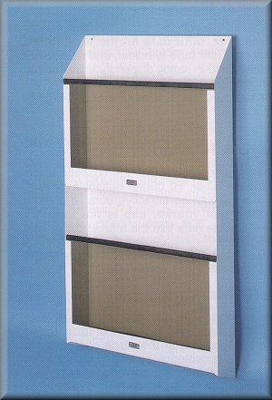

Instrument Tables

| Stock # | Configurations | Dimensions | Your Price |
|---|---|---|---|
| 21609 | Single | 22-1/4"W X 22-3/8"H X 5-1/4"D | $219.69 |
Wolf X-Ray Utility File Easily wall mounted via 2 keyholes, the X-Ray Utility File's generous size will hold your largest cassettes, films, jackets, files or whatever else you need to keep conveniently at hand. The Wolf X-Ray Utility File is manufactured of steel with a baked on white finish. The individual bins have plexiglas front panels that allow you to see at a glance what is in them. Uniquely our X-Ray Utility File has a rubber mat on the bottom of the bin that cushions anything placed in it. This means no more damage to expensive cassettes. The X-Ray Utility File is available in single and double tiers. Dimensions and stock numbers are shown below.